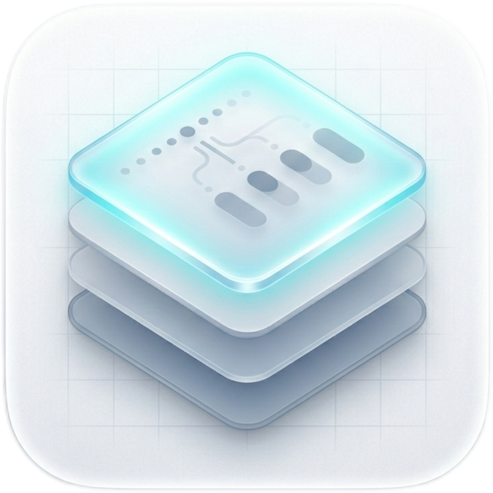
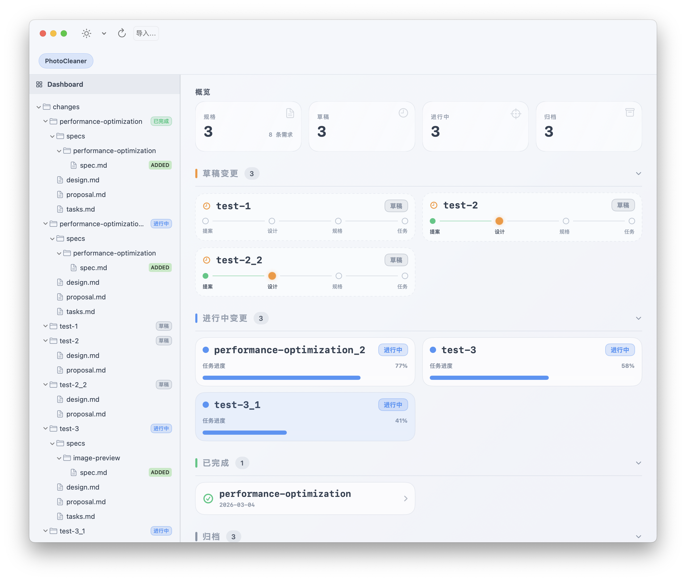

New Version v1.0.4 Available
OpenSpecGUI
An OpenSpec GUI Viewer
Visual OpenSpec Dashboard
OpenSpecGUI 是浏览 OpenSpec 规范的图形界面。在一个界面中可视化项目，包括规范、需求与变更。

OpenSpecGUIOpenSpecGUI 是浏览 OpenSpec 规范的图形界面。在一个界面中可视化项目，包括规范、需求与变更。

Effortlessly explore complex spec hierarchies with a sidebar designed for high-density information.
Get a bird's-eye view of your project status, from drafts to completed performance optimizations.
Visualize OpenSpec projects with built-in analytics. Monitor requirements distribution, file changes, and task completion rates through a clean, native interface.
Optimized for developers and designers. Quickly preview .md files, track design proposals, and manage performance optimization specs in one place.